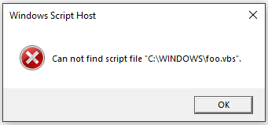

(CVE-2018-8495) Chaining a few bugs in Edge I was able to achieve remote code execution by mainly abusing custom URI schemes.
Many of you are probably aware that within the browser one can launch the default mail client by having a user go to a URL that looks like 'mailto:test@test.test'. A prompt will appear asking the user whether to switch applications, once a user agrees, the application will run.
 In my case, Outlook is the default mail application and as you can see in the image below certain parameters are sent to the Outlook executable.
In my case, Outlook is the default mail application and as you can see in the image below certain parameters are sent to the Outlook executable.
 So there is user tainted string being passed as a parameter value, clearly something could go wrong here. But the question is - What other external-application-launching URI schemes are there?
So there is user tainted string being passed as a parameter value, clearly something could go wrong here. But the question is - What other external-application-launching URI schemes are there?
When looking at the registry we can find all the registered custom protocols we can use. Within 'Computer\HKEY_CLASSES_ROOT\' we look for folders which contain 'shell\open\command' as sub folders. For example, I found that 'ms-word' has such sub folders.
 So if we look at the values of
So if we look at the values of 'Computer\HKEY_CLASSES_ROOT\ms-word\shell\open\command' we find 'C:\Program Files (x86)\Microsoft Office\Root\Office16\protocolhandler.exe "%1"'. This means if we have a user click on an anchor tag that points to 'ms-word:test' the following will occur:
 I am too lazy to look at all the possible command line parameters we could throw at
I am too lazy to look at all the possible command line parameters we could throw at 'protocolhandler.exe' to achieve something useful. So let's take a look at a lower hanging fruit.
 Well, this is very convenient! A URI scheme that passes user tainted arguments directly to
Well, this is very convenient! A URI scheme that passes user tainted arguments directly to 'WScript.exe'. In case you don't know: "Windows Script Host provides an environment in which users can execute scripts in a variety of languages that use a variety of object models to perform tasks." Let's see what happens if a user navigates to 'wshfile:test' from Edge.
First, we get a prompt asking to choose the default application that should handle this URI scheme. By default, as we've seen in the registry, 'Windows Script Host (WScript.exe)' is the handler.
 Pressing
Pressing 'OK' yields the following:
 What
What 'WScript.exe' does is it attempts to execute the file located in the path you pass to it. In this case, it tried to locate 'C:\WINDOWS\system32\wshfile:test' but it does not exist.
So what can we do about this? Can we somehow drop a file that's named 'wshfile:test'? Nope. So what can we do?
The first test here is obvious: path traversal. I simply navigated to 'wshfile:test/../../foo.vbs', pressed OK on the prompt and then:

Awesome! We can now point to any file in any directory and so long as we can drop a file in a predictable location, we will have RCE. But that is easier said than done, looked like most if not all cached files from Edge go into a salted directory location. In other words, we could plant files but we can't predict their location.
This is where I remembered an awesome article written by Matt Nelson. In this article he points out that Windows comes with a signed VBS located in 'C:\Windows\System32\Printing_Admin_Scripts\en-US\pubprn.vbs' that suffers from 'WSH Injection'. I highly recommend you read it, it essentially shows that the specific VBS file accepts 2 arguments passed to it and these arguments can be crafted as such that it would trick the VBS script into executing arbitrary commands. But! This was fixed already and the only affected computers are the ones that haven't updated yet. So that's not good enough, the article mentions that many more such cases exist but did not specify, thus begins my search for a similar case.
I started by looking at every single VBS file I could find in Windows and then looking if it accepts any parameters. I found one located at
'C:\Windows\WinSxS\amd64_microsoft-windows-a..nagement-appvclient_31bf3856ad364e35_10.0.17134.48_none_c60426fea249fc02\SyncAppvPublishingServer.vbs'
psCmd = "powershell.exe -NonInteractive -WindowStyle Hidden -ExecutionPolicy RemoteSigned -Command &{" & syncCmd & "}"
'syncCmd' but not only that, Edge also does not sanitize quotation marks, so we can pass as many parameters to 'WScript.exe' as we want. Again, conveniently this powershell will run hidden as indicated by '-WindowStyle Hidden' which makes this a perfect WSH injection vector.
'C:\Windows\WinSxS\amd64_microsoft-windows-a..nagement-appvclient_31bf3856ad364e35_10.0.17134.48_none_c60426fea249fc02\SyncAppvPublishingServer.vbs'
'C:\Windows\WinSxS\AMD921~1.48_\SyncAppvPublishingServer.vbs'
The final proof of concept is as follows:
<a id="q" href='wshfile:test/../../WinSxS/AMD921~1.48_/SyncAppvPublishingServer.vbs" test test;calc;"'>test</a> <script> window.onkeydown=e=>{ window.onkeydown=z={}; q.click() } </script>
ZDI Advisory: https://www.zerodayinitiative.com/advisories/ZDI-18-1136/